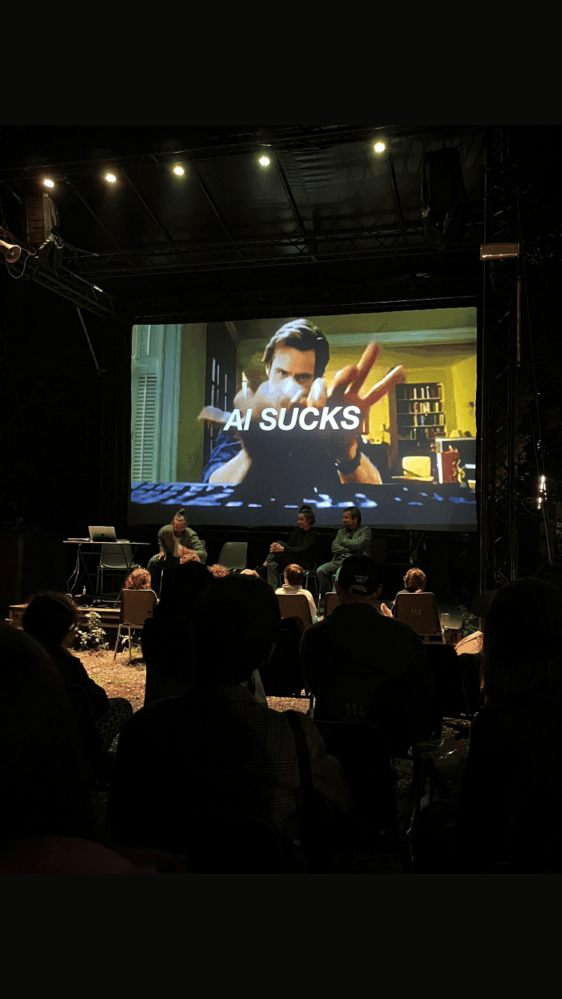
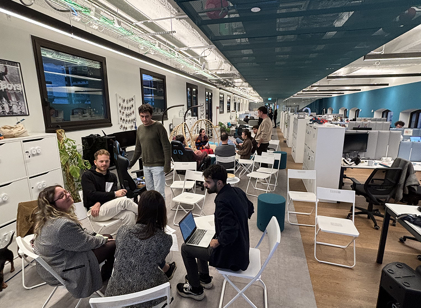

Audio per radio onda d'urto in occasione della presentazione di "Incomputabile"
Q code parla di Nina su RSI.chIntervista a Radiopop
L’INTELLIGENZA ARTIFICIALE: L’INNOVAZIONE DEL DISPOSITIVO DI DOMINIO CAPITALISTA - Arcipelago MilanoIA e società - 22 maggio - municipio IV - ore 18
